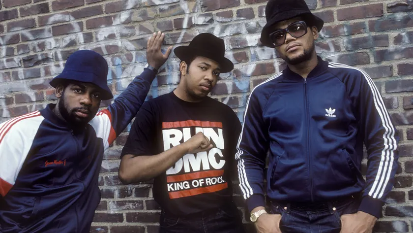
Adidas × Run-DMC / 1986
My Adidas (official audio)
The song that started it, from Run-DMC’s own channel. Listen for the brand name in the chorus.
The partnership archive / Edition 04 / Culture first

“You can pay for a place in culture. You can’t pay to be welcome there.”
Edition 03 followed the money. This edition follows the thing money struggles to buy: credibility with the people who make music, sport, art and fashion. For each partnership I ask who brought the culture, and whether it stayed.
15 case studies / 1928 to 2017
Opening story / Adidas and Run-DMC / 1986
Run-DMC wrote a song about their trainers before anyone paid them. When an Adidas executive saw a Madison Square Garden crowd hold their shoes in the air, the first sneaker deal outside sport followed.
01 / The finding
The partnerships people still talk about are the ones that lasted. Coca-Cola has been at the Olympics since 1928 and is signed to 2032. Absolut has worked with Warhol’s legacy for forty years, Adidas with Stella McCartney for twenty, and Converse with Comme des Garçons for fifteen. Fred Perry carried on after Amy Winehouse died, with her family’s blessing.
The measured results are thin. Only four cases have a sales or donations figure, and one, Samsung and Jay-Z, can show reach but not effect. Ten are archival: the record shows the partnership and how long it ran, not what it earned. None has a modelled effect.
The strongest pattern isn’t in the numbers. In the best cases the culture came first: Run-DMC wore Adidas, Haring sold cheap art, and Phish was already Vermont’s band. The brand had the sense to back what was already there.
Modelled effectSales or value trendReach only or archival
02 / The patterns
Talent for scale leads: an artist or designer brings the idea, and the brand makes it in millions. Credibility for reach is new to this edition, where the partner’s standing is the point. Choose one to filter the archive.
A designer or artist brings taste, and a big brand brings reach.
Two products combine into something neither could sell alone.
One side pays to stand next to something people already love.
One side pays to be where customers start: the default, the shelf or the screen.
A cultural figure lends authenticity, and a brand takes it to a mass audience.
03 / The screening room
A song and three films from the partners’ own channels. Notice how often the brand lets the culture speak first.

Adidas × Run-DMC / 1986
The song that started it, from Run-DMC’s own channel. Listen for the brand name in the chorus.
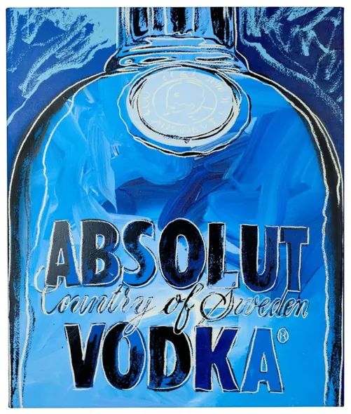
Absolut × Andy Warhol / 1985
Absolut tells the story from Warhol’s first painting in 1985 to today.
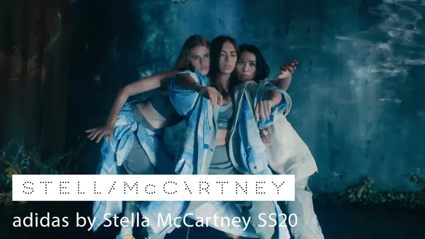
Adidas × Stella McCartney / 2004
A campaign film from the partnership’s second decade. Notice whose name comes first.
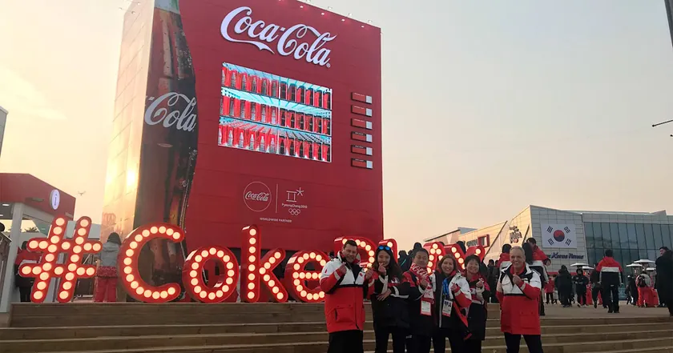
Coca-Cola × the Olympic Games / 1928
Coca-Cola’s archivists on ninety years of the Olympic partnership.
04 / The collection
See each partnership alongside what each side brought and what it achieved. Open each case for the film, my take and how I’d measure a similar deal.
Modelled effectSales trendSurveyReach only or archival
15 partnerships
Adidas and Run-DMC, 1986
Run-DMC wore Adidas Superstars without laces as part of their look, and released a single called ‘My Adidas’ in 1986. Sportswear brands signed athletes, not musicians.
Adidas signed the group to an endorsement deal. Run-DMC gave Adidas a place in hip-hop culture that no advertising could have bought.
At a Madison Square Garden concert, an Adidas executive watched thousands of fans hold their trainers in the air as the group performed the song. The deal followed.
Adidas didn’t create the moment. It saw it in a crowd at Madison Square Garden and had the sense to back it.
Image: Ebet Roberts, via MR PORTER
The deal is recorded as the first sneaker endorsement for non-athletes, but its value and year vary between sources. No sales effect was published.
The best cultural partners are already using your product. Find the people who chose you before you paid them.
For Adidas, track sales of the shoe in the cities where the group was strongest, before and after the deal. For the group, record ticket sales and album sales after the song became an anthem.
Coca-Cola and the IOC
At the 1928 Amsterdam Games, Coca-Cola was there with the American team. The Olympics were growing into the world’s biggest sporting event.
Coca-Cola has paid to be an official Olympic partner. The Games have had one of the world’s best-known brands at their side.
In 2019 the partnership was extended to 2032, jointly with the Chinese dairy company Mengniu. The International Olympic Committee calls Coca-Cola its longest-standing partner.
Nearly a hundred years in, nobody asks what the Olympics does for Coca-Cola any more. That’s the most valuable thing a partnership can earn, and the most dangerous.
Image: Coca-Cola Olympic activation · International Olympic Committee
The renewals are the evidence: Coca-Cola keeps choosing the Olympics. No public figure shows what each Games adds, and health groups have urged the IOC to end the deal.
A partnership that lasts a century becomes part of both brands. It also means you inherit each other’s criticism.
After a long partnership, the question is what each Games still adds. Compare sales and brand preference in each host country with similar countries during Games years, and track how many people still link the brand to the Olympics.
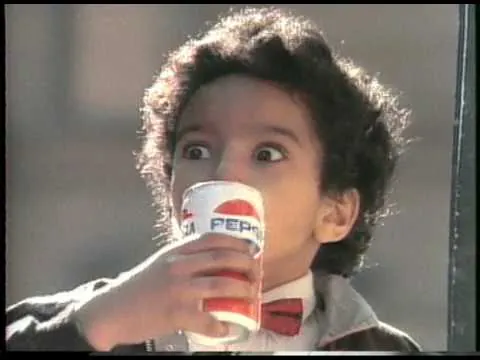
Pepsi × Michael Jackson / 1984 / Money for associationThe Choice of a New GenerationThe biggest pop star in the world rewrote ‘Billie Jean’ for a soft drink.Endorsement · Signed, launched and reported $5mThe reported fee, then a recordPepsi and Michael Jackson, 1984
Pepsi was fighting Coca-Cola for younger drinkers. Michael Jackson had just released Thriller, the best-selling album of the era.
Pepsi paid Jackson and his brothers a record fee. Jackson reworked ‘Billie Jean’ into a Pepsi jingle for the ‘new generation’ campaign.
The campaign ran in 1984. During filming, Jackson’s hair caught fire, and the accident became part of the story.
The deal that set the price of celebrity in advertising for a generation. It made the endorsement fee a headline in itself.
Image: Pepsi Generation (1984) · still from director Bob Giraldi’s archive
Pepsi’s sales reached $7.7bn in 1984 and its share rose while Coca-Cola’s fell, according to reports at the time. Those figures sit alongside the campaign, and no source separates its effect.
When a partner is the culture of the moment, the deal can change the category, not just your share of it.
Compare Pepsi’s share in the weeks the adverts ran with weeks without them, region by region, to separate the campaign from the wider trend. For Jackson, track album sales and concert demand around the launch.
Absolut and Andy Warhol, 1985
Absolut was building a brand in America around its distinctive bottle. Andy Warhol was the most famous artist in the world.
Absolut commissioned Warhol to paint its bottle. Warhol made two paintings, and one became an advert.
The 1985 painting started a tradition: between 1985 and 2004 Absolut commissioned 850 works from 550 artists for its advertising.
Warhol painted a bottle, and Absolut spent twenty years turning that into its whole identity. The partnership outlived the man.
Image: Blue Absolut Warhol artwork · The Absolut Company press archive
The collection and its use in advertising are well documented. The second Warhol painting resurfaced in 2020 and became a limited-edition bottle, which Absolut’s owner says drove growth, without giving numbers.
One great collaboration can become a platform. Ask whether the first partner can open the door to many more.
Track awareness and premium price acceptance in markets where the art adverts ran against markets where they didn’t. For the artists, record how many commissions led to wider recognition or gallery sales.
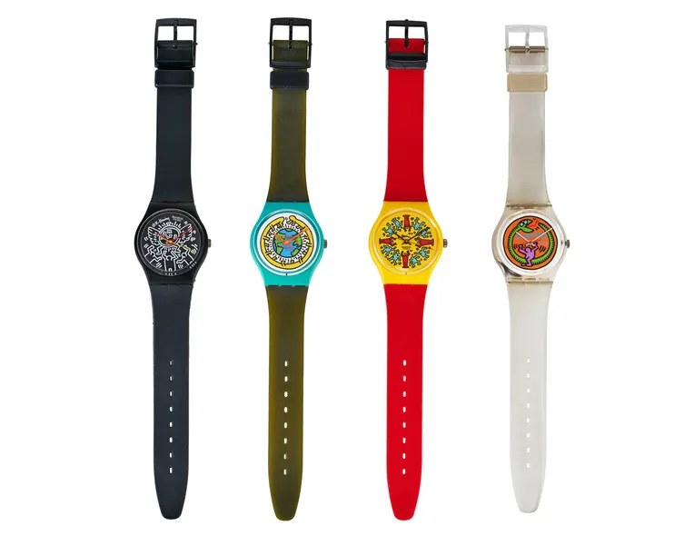
Swatch × Keith Haring / 1986 / Talent for scaleArt You Could WearA street artist put his figures on a cheap plastic watch.Artist collaboration · Launched 1986The year of Haring’s Swatch designs · legacy factSwatch and Keith Haring
Swatch had been launched in 1983 as an affordable, fashionable Swiss watch. Keith Haring wanted art to reach everyone, and opened a shop to sell it cheaply.
Haring designed watches for Swatch. Swatch put his art on people’s wrists at an affordable price.
Swatch dates Haring’s watches to 1986, a year after its first artist watch by Kiki Picasso. Artist editions became a Swatch tradition.
The most natural fit in this edition. Neither side had to pretend. Haring sold cheap art, and Swatch made the cheap watch desirable.
Image: Keith Haring Swatch watches · Christie’s catalogue photography
The watches are now collectors’ items, and Swatch has worked with many artists since. No sales figure was published.
Partner with an artist whose values match your product. Haring wanted art for everyone, and Swatch was a watch for everyone.
Report sales of each artist edition against standard designs released in the same season, and resale prices over time. For the artist, track recognition among younger buyers outside the art world.
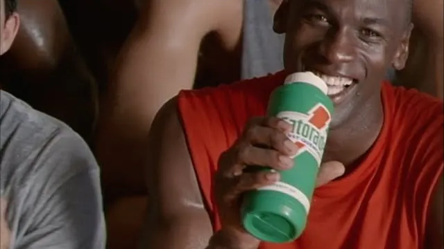
Gatorade × Michael Jordan / 1991 / Money for associationBe Like MikeAn advert so catchy that its song outlived the campaign.Endorsement · Signed and launched $13.5mReported value over ten years · legacy factGatorade and Michael Jordan, 1991
Gatorade already dominated sports drinks. Michael Jordan had just won his first championship.
Gatorade signed Jordan as its only endorser. The ‘Be Like Mike’ advert showed children dreaming of playing like him.
The advert aired on 8 August 1991, the same day Gatorade announced the deal. Its song became a hit in its own right.
The song is famous, the sales effect is not. It’s a reminder that the most loved adverts aren’t always the ones that moved the numbers.
Image: Be Like Mike (1991) · still from the remastered advert
The advert is one of the most remembered in sport. Gatorade already led its category, and a widely quoted sales jump came before the advert aired. Some accounts say it didn’t drastically change sales.
When you already lead the market, a cultural partner may defend your position rather than grow it. Measure accordingly.
Gatorade already led the category, so measure share among young athletes and preference against rivals, before and after the advert, in markets where it ran heavily and markets where it didn’t.
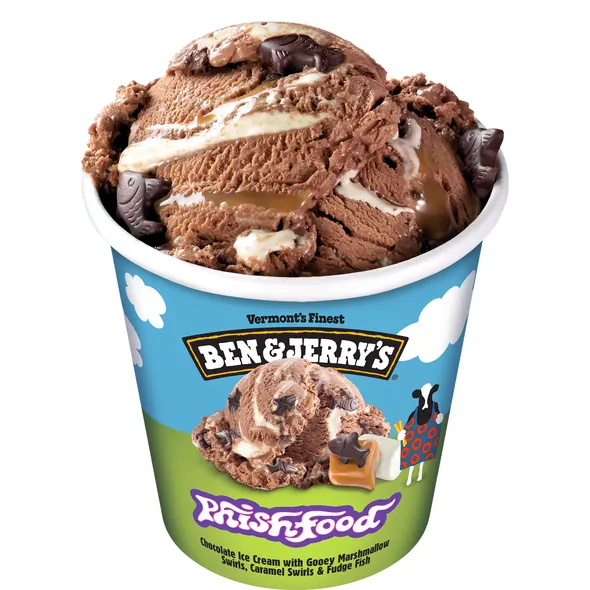
Ben & Jerry’s × Phish / 1997 / Credibility for reachPhish FoodTwo Vermont institutions made an ice cream together.Co-branded product · Launched 1997Launched, and still sold today · legacy factBen & Jerry’s and Phish, 1997
Phish was a Vermont band with a devoted touring following. Ben & Jerry’s was a Vermont ice cream company already known for flavours with personality.
Phish lent its name to a flavour and directed its royalties to charitable causes. Ben & Jerry’s made and sold the ice cream.
Phish Food launched in 1997 with a concert at the Flynn Theatre in Burlington, and is still on sale.
The partnership works because it feels like neighbours, not a deal. That is hard to fake.
Image: Phish Food packaging · Ben & Jerry’s product photography
The flavour’s long life suggests it sells, but Ben & Jerry’s doesn’t publish sales by flavour, and claims that it is the best-seller conflict.
Local partnerships can travel. Shared roots make the story believable a long way from home.
Report sales of the flavour against the range average each year, and how many first-time Ben & Jerry’s buyers start with it. For the band, track donations to its charity and ticket sales in towns where the flavour sold well.
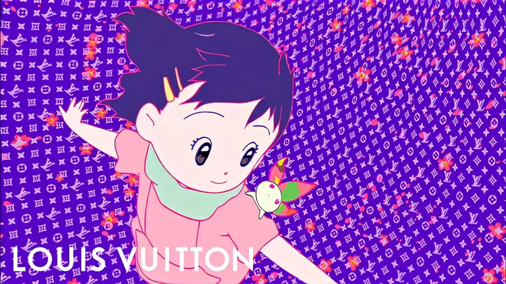
Louis Vuitton × Takashi Murakami / 2003 / Talent for scaleMonogram MulticoloreAn artist repainted the most famous monogram in fashion in 33 colours.Artist collaboration · Launched and reported $300m+First-year sales, as widely reportedLouis Vuitton and Takashi Murakami, 2003
Louis Vuitton’s brown monogram was iconic but serious. Its creative director, Marc Jacobs, wanted it to feel young and playful.
Takashi Murakami redrew the LV monogram in 33 colours on white and black canvas. Louis Vuitton made it into bags sold around the world.
The Multicolore line launched for spring and summer 2003 and became one of the defining bags of the decade.
Vuitton let an artist touch its crown jewel. The risk was enormous, and the monogram came out younger.
Image: Superflat Monogram (2003) · Louis Vuitton’s remastered film
The sales figures are widely repeated but traced to secondary sources rather than LVMH’s accounts. The line was discontinued in 2015.
Letting an artist play with your most sacred asset can renew it, as long as the asset stays recognisable.
Report sales of the line against classic monogram sales in the same stores and seasons, and the share of new and younger customers. For Murakami, track gallery prices and exhibition demand after the launch.
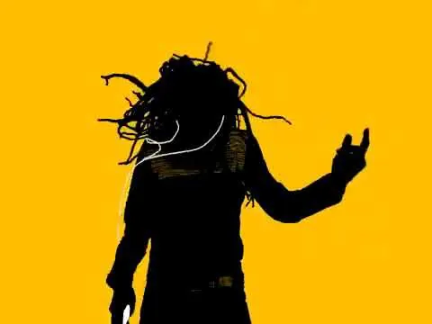
Apple × U2 / 2004 / Product for productThe U2 iPodA rock band got its own iPod.Co-branded product · Launched Oct 2004 to Jun 2005How long the U2 iPod was on sale · legacy factApple, U2 and Universal Music Group, 2004
Apple was making the iPod the way people carried music. U2 had a new album, and record labels were nervous about digital music.
Apple made a black and red U2 edition of the iPod and an advert with the band playing ‘Vertigo’. The single was sold exclusively through iTunes in the US.
Announced in October 2004, the U2 iPod carried the band’s signatures on the back and came with a discount on U2’s complete catalogue on iTunes.
The iPod advert that felt like a music video. Ten years later the same partners pushed an album onto everyone’s phones, and that’s in Failure first.
Image: Vertigo (2004) · Apple television advert still from an archive upload
No sales figures for the special edition were published. The partnership is remembered for the advert and the iTunes tie-in, and a decade later the same partners made a much less popular move.
When both sides bring a product, the partnership can sell each other’s. Design the deal so both products benefit.
Report special edition iPod sales against standard models in the same months, and iTunes catalogue sales for the band before and after. For the band, track album sales and streams among people new to them.
Adidas and Stella McCartney, 2004
Women’s sportswear was often men’s kit made smaller. Stella McCartney, known for luxury fashion without leather, wanted to design for active women.
McCartney designed performance collections for running, gym and swimming. Adidas made and sold them worldwide.
Announced in September 2004, the line reached shops in 2005. In 2010 Adidas made McCartney creative director for Team GB’s kit at London 2012.
Most designer collaborations last a season. This one lasted twenty years because it filled a gap, not just a headline.
Image: Adidas by Stella McCartney SS20 · still from Stella McCartney’s campaign film
Neither side publishes the line’s sales. Its longevity, a dedicated store from 2012 and the Team GB role suggest both have found it worth continuing.
A designer partnership can outlast a capsule collection if the designer solves a real problem for customers.
Report the line’s sales and full-price sell-through against Adidas women’s performance wear, and the share of buyers new to the brand. For McCartney, track awareness of her own label in markets where the line sold well.
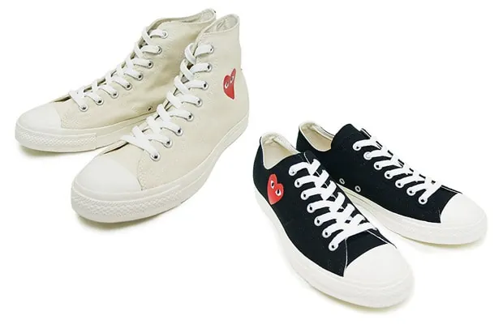
Converse × Comme des Garçons PLAY / 2009 / Credibility for reachThe Heart on the ChuckA small heart with eyes made a classic trainer fashionable again.Designer collaboration · Launched and running 15 yearsCelebrated in 2024 · legacy factConverse and Comme des Garçons PLAY
The Chuck Taylor was a classic, but common. Comme des Garçons, the Japanese fashion house, had a playful sub-label, PLAY, with a heart logo designed by Filip Pagowski.
Comme des Garçons put its PLAY heart on Converse’s Chuck Taylor. Converse brought the shoe and the distribution.
The heart first appeared on the Chuck Taylor in 2009, with a wider release in 2015. In 2024 the partners marked fifteen years.
The smallest intervention in this edition, and one of the longest-lasting. Sometimes a partner only needs to add a heart.
Image: 2009 Chuck Taylor collaboration · product photography via Hypebeast
The shoe is a staple in fashion stores, and the partnership keeps being renewed. Neither brand publishes its sales.
A small mark from the right partner can change how people see a familiar product. Keep the change small and the product intact.
Report sales and full-price sell-through against standard Chuck Taylors in the same stores. For Comme des Garçons, track how many buyers go on to its own lines, using store and online accounts where they can be linked.
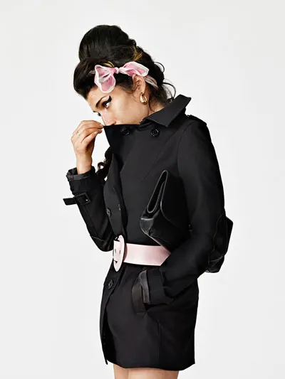
Fred Perry × Amy Winehouse / 2010 / Credibility for reachAmy Winehouse for Fred PerryA singer designed clothes for a British brand, and the partnership continued after her death.Designer collaboration · Launched and continued with her foundation £2.4mRaised for the Amy Winehouse Foundation, per Fred PerryFred Perry and Amy Winehouse, 2010
Amy Winehouse’s look drew on the British subcultures Fred Perry had long dressed. Fred Perry wanted to reach a new generation of women.
Winehouse designed womenswear collections for Fred Perry. Fred Perry made and sold them.
Winehouse died in July 2011 with two seasons still to come. With her family’s approval, Fred Perry released them and gave her royalties and fees to the Amy Winehouse Foundation.
The most moving case in the archive. Fred Perry found a way to carry on that honoured her rather than profited from her.
Image: Amy Winehouse for Fred Perry, autumn and winter 2010 · campaign photography via DSCENE
The donations are reported by the brand, and totals vary by date. No figure shows what the collections did for Fred Perry’s own sales.
If a partnership outlives its plan, let the partner’s family and values decide what happens next.
Report money raised for the foundation each season and publish the total in one place, since the figures vary. For Fred Perry, compare sales of the collections with its own women’s range, and track how buyers feel about the brand.
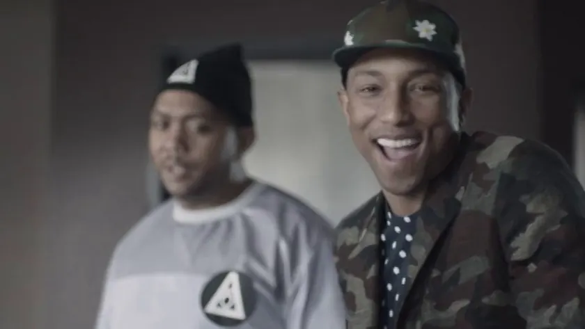
Samsung × Jay-Z / 2013 / Money for distributionMagna Carta Holy GrailSamsung bought a million copies of an album before it came out.Platform integration · Launched 1mCopies Samsung bought and gave awaySamsung and Jay-Z, 2013
Samsung wanted its Galaxy phones to feel culturally relevant against the iPhone. Jay-Z had a new album and wanted a different way to release it.
Samsung bought a million copies of the album and gave them free to Galaxy owners through an app, three days before it reached shops.
The album was released to Galaxy owners on 4 July 2013. The music industry body, the RIAA, changed its rules so digital albums could be certified platinum on release day.
Jay-Z was paid before anyone heard a note. It was a brilliant deal for the artist, and a harder one to prove for the phone.
Image: Oceans · Samsung and Jay-Z campaign film still from Allison Hayes’s archive
The million copies and the RIAA change are documented. Billboard didn’t count the copies, and Samsung published no figure for what the deal did for phone sales.
Buying a cultural moment outright can rewrite an industry’s rules. Make sure it also rewrites what customers think of you.
Compare Galaxy sales and app downloads among young buyers in the weeks around the release with the same weeks the year before. For the artist, report sales, streams and touring income, separately from the million copies Samsung bought.
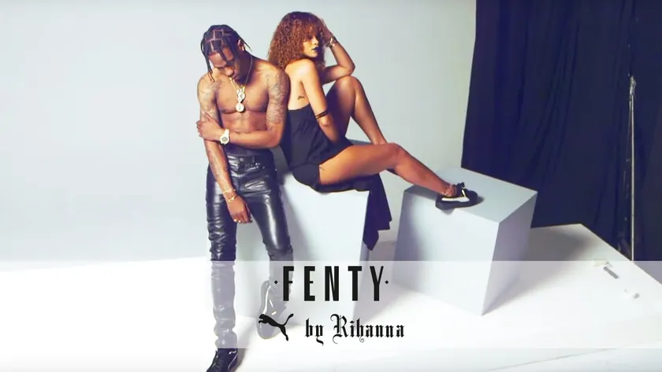
Puma × Rihanna / 2014 / Talent for scaleFenty PumaA pop star became a sportswear brand’s creative director, and its women’s business took off.Designer collaboration · Launched and ended +17.1%Puma sales growth, fourth quarter 2015Puma and Rihanna, 2014
Puma was struggling to compete with Nike and Adidas, especially with women. Rihanna was one of the most influential style figures in the world.
Puma made Rihanna creative director of its women’s line. She designed collections, including a creeper trainer that sold out.
Rihanna joined Puma in December 2014. Her Creeper sold out within hours in 2015, and the Fenty Puma line ran until 2018.
Rihanna didn’t just wear Puma, she made it. That’s the difference between an endorsement and a partnership.
Image: Fenty Puma Creeper · still from Puma’s behind-the-scenes film
Puma credited Rihanna with lifting its women’s business, but women’s sportswear was growing across the industry, and Puma’s chief executive later said the company’s total revenue didn’t depend on her.
A celebrity creative director works when they design, not just endorse. Give them real authority over the product.
Report Fenty Puma sales and their share of women’s growth against the category trend for the same period. For Rihanna, track the brand’s growth under her own name and the platform it gave her later businesses.
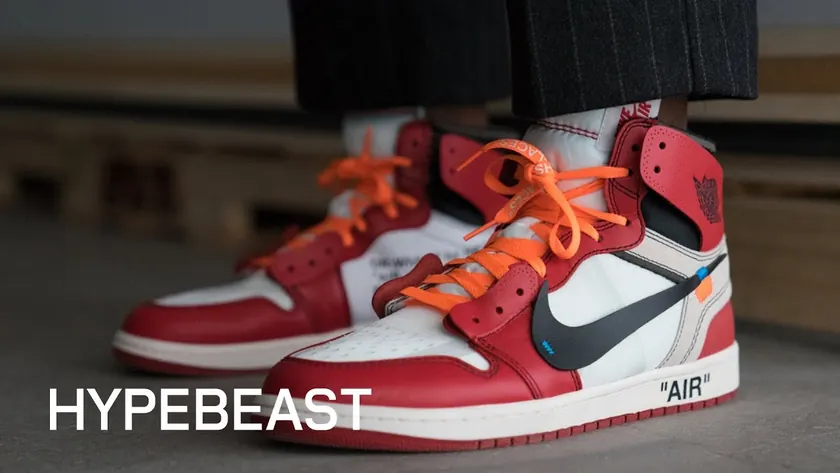
Nike × Off-White / 2017 / Talent for scaleThe TenA designer took apart ten of Nike’s most famous shoes, and put them back together with quotation marks.Designer collaboration · Launched $1,765Average resale price of the white Air Jordan 1, per StockX data · legacy factNike and Virgil Abloh, 2017
Nike had decades of classic shoes. Virgil Abloh, of the Off-White label, was the most influential designer for a young streetwear audience.
Abloh redesigned ten Nike classics, from the Air Jordan 1 to the Air Max 90, with exposed foam, labels and quotation marks.
‘The Ten’ was released in 2017. Abloh later became Louis Vuitton’s menswear artistic director, and the shoes’ resale value soared.
Abloh appeared in Edition 01 with IKEA. Here he did the same trick for Nike: he made the familiar feel rare.
Image: The Ten (2017) · Hypebeast’s Off Campus interview thumbnail
Resale prices show huge demand, but they are made by resellers, not Nike. Nike published no sales or brand figures for the collaboration.
A designer can make your archive feel new. Watch the resale market: it tells you how much value you left on the table.
Nike can’t claim resale value. Measure full-price sell-through, how many entrants joined each release, and whether buyers went on to other Nike lines. For the designer, track demand for his own label after each drop.
No partnerships match. Try clearing the search or setting a filter back to All.
05 / The evidence
An announcement shows a deal was signed. A launch shows it happened. Only a result shows what it achieved. Each case says which of the three the record supports.
A reported price is an input, not an outcome. Where a value appears, it is flagged separately and marked as confirmed, estimated or rumoured.
A partnership can work for one side and not the other. Each case lists what each partner brought, and the evidence says which side the outcome belongs to.
Many figures come from the partners themselves or from press estimates. The source for every outcome is named, so you can judge it.
Every case gets one of five ratings, strongest first: modelled effect, sales trend, survey, reach only and archival. Here a rise in sales, or money raised for a cause, counts as a trend. A deal term, such as a stake, is marked so it isn’t read as a result.
Each partnership joined a brand to music, sport, art or fashion and left a public record. Where a figure comes from the brand itself, the case says so. Media credits identify original work, archive footage and later retrospectives.
06 / Out now / Edition 05